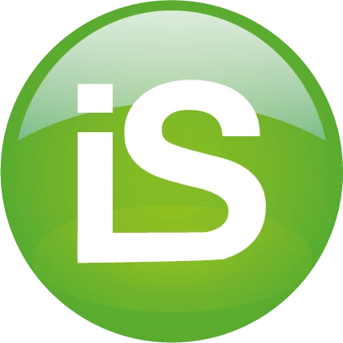
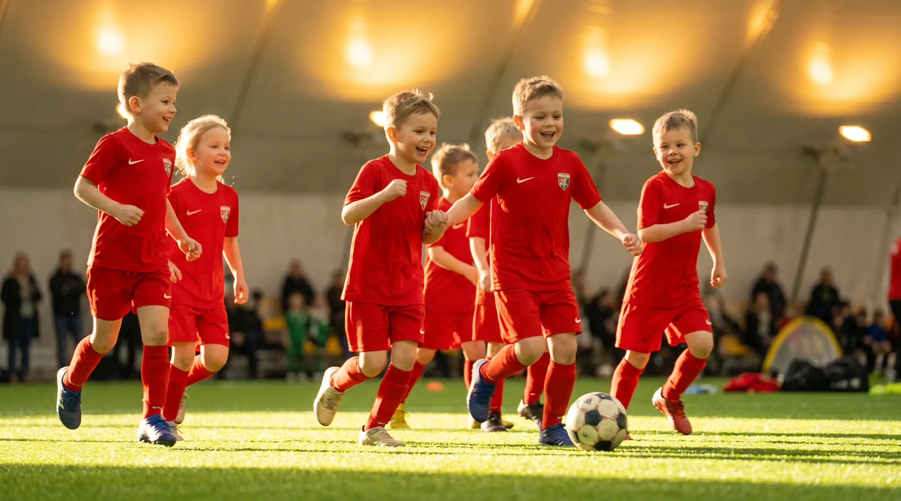

POSITIVO EXPERIENCE
— by iSCOUT —
Tecnologia brasileira para enxergar o futuro do futebol antes de todo mundo.
A Grande Oportunidade
Quem vai construir a inteligência para enxergar o futuro do talento brasileiro?
Tem a plataforma. Tecnologia proprietária de visão, dados e inteligência para o futebol de base.
Tem a reputação, a infraestrutura e a credibilidade para transformar essa plataforma em uma rede nacional.
O Giro de Perspectiva
As câmeras são usadas quase 100% para olhar algo que já aconteceu — o passado. Nesta oportunidade, as câmeras serão ferramentas preditivas e, pela primeira vez, vão olhar o futuro.
Juntas, as duas podem ajudar o Brasil a recuperar não só a liderança na formação de talentos, mas a liderança na inteligência sobre a formação de talentos.
A Parceria
Positivo: reputação e infraestrutura para atender rede nacional.
Para uma solução chegar ao futebol de base brasileiro em escala, além de tecnologia é preciso confiança. Confiança das famílias, dos clubes, das escolas, do mercado.
+
.png)
iSCOUT · Plataforma e Inteligência
Plataforma de Inteligência Esportiva.
IA proprietária aplicada ao jogo.
Jornada do atleta.
Experiência das famílias.
Relação com clubes, escolas e escolinhas.
+
Positivo · Infraestrutura e Marca
Infraestrutura de captura de imagens.
Hardware e câmeras.
Edge e conectividade.
Credibilidade tecnológica B2B.
Marca brasileira de confiança.
Força institucional e capilaridade.
Poder de instalação e manutenção nacional.
Confiança dos parceiros.
Juntas, as duas podem construir a primeira infraestrutura nacional de
inteligência de base do futebol brasileiro.
inteligência de base do futebol brasileiro.

Nova Categoria de Mercado
Esporte & Entretenimento: investimento em novas categorias de mercado.
Esta parceria permite a inovação que pode mudar a forma como o esporte de base é visto, acompanhado e desenvolvido, iniciando pela modalidade futebol.
Patrocínio Tradicional
✗ Visibilidade pontual
✗ Logo em uniforme ou placa
✗ Campanha com prazo de validade
✗ Baixa conexão com produto
✗ Impacto difícil de medir
+
✓ Tecnologia instalada em campo
✓ Uso real 365 dias por ano
✓ Marca integrada à jornada do atleta e famílias
✓ Dados agregados e recorrentes
✓ Conteúdo, PR, B2B e impacto mensurável
Mas isso não vem sozinho. Quando falamos de esportes e futebol no Brasil, invariavelmente, também estamos falando de lifestyle, cultura e de todo um ecossistema de oportunidades comerciais para marcas percolarem produtos e serviços para novas bases qualificadas de consumidores.